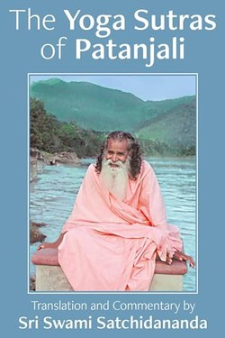

Library › Self-Improvement
The Yoga Sutras of Patanjali — Summary & Key Lessons

195 aphorisms that define the mind's operating manual — the source text of all yoga.
📖 OPEN THE FULL INTERACTIVE BREAKDOWN →🌐 Read it in Hindi, Hinglish, Gujarati, Tamil & 22 more languages — free, with audio.
💡 The Big Idea
Patanjali compresses the entire science of inner work into 195 sutras. The mind is always churning (vrittis); yoga means stopping that churn so you see reality as it is. The path is the eight limbs: ethics (yama), personal rules (niyama), posture, breath control, sense withdrawal, concentration, meditation and absorption. Most modern yoga stops at posture; Patanjali says posture is merely step three of eight.
🧠 The 8 Key Lessons
Lesson 1: The Mind Is a River — Stop It
Chapter 1: What Yoga Actually Means
Sutra 1.2 defines yoga as citta-vritti-nirodha: the cessation of the fluctuations of consciousness. The mind generates five kinds of waves — correct knowledge, wrong knowledge, imagination, sleep and memory. You are not these waves; you are the awareness behind them. Freedom begins when you see the waves instead of being them.
📖 Example: One anxious thought at 2 am feels like truth; written down at 9 am it looks like a weather report — a wave, not you. Read the full example →
⚡ Do this: For 5 minutes daily, sit, breathe and label thoughts as 'thinking' — watch them pass without chasing.
Lesson 2: The Eight-Limb Path
Chapter 2: The 8 Steps, In Order
Patanjali's ladder: yama (how you treat others), niyama (how you treat yourself), asana (steady seat), pranayama (breath), pratyahara (withdrawing senses), dharana (focus), dhyana (meditation), samadhi (absorption). The order matters — ethics precede technique. A person who can hold a pose but not a promise has not started the path.
📖 Example: Meditation apps sell steps 6-8; Patanjali says the real work is steps 1-2: honesty, non-violence, contentment. Read the full example →
⚡ Do this: Pick one yama (truthfulness) and one niyama (contentment) and practise them deliberately for 21 days.
Lesson 3: Breath Is the Remote Control
Chapter 3: The Breath-Mind Link
Pranayama is the bridge between the automatic and the intentional. When breath lengthens, the heart and mind follow; when the mind is agitated, the breath is already jagged. By regulating the breath you get direct access to the nervous system — no belief required. The sutras prescribe lengthening exhalation to calm the system.
📖 Example: Before a stressful call, 4-4-8 breathing (in 4, hold 4, out 8) shifts the body from alarm to control. Read the full example →
⚡ Do this: Twice daily, do 10 rounds of longer-exhale breathing (in 4, hold 4, out 8).
Lesson 4: Obstacles Have Antidotes
Chapter 4: The Nine Obstacles
Patanjali lists what blocks the path: illness, dullness, doubt, carelessness, laziness, craving, wrong views, failure to progress and instability. Their symptoms are mental pain, negative thinking, and loss of breath control. The cure is one-pointed practice and non-attachment to results — plus patience, because the fruits come like seasons.
📖 Example: Skipping meditation for three days is not a character flaw; it is obstacle 5 (laziness) with a known antidote: show up for one breath. Read the full example →
⚡ Do this: Name your top obstacle today and pair it with one 1-minute action you will not negotiate.
Lesson 5: Contentment Is a Superpower
Chapter 5: The Last Liberation
Sutra 2.42: contentment yields supreme happiness. He who has stopped craving what he lacks is richer than he who has everything and wants more. Attachment to outcomes is the root of suffering — effort with detachment (karma in the truest sense) is the secret. The sage is not passive; he acts fully, attached to nothing.
📖 Example: A student who studies for knowledge rather than marks usually gets both — the detached mind performs better. Read the full example →
⚡ Do this: Do one task this week at full effort and surrender the outcome you can't control.
Lesson 6: The Yamas: How You Treat the World
Sutras 2.30-2.31: The Five Restraints
Patanjali's first limb is not technique but ethics: ahimsa (non-harm), satya (truth), asteya (non-stealing), brahmacharya (wise use of energy), aparigraha (non-possessiveness). These are not moral decoration — harm, lies and greed agitate the mind exactly as much as physical noise, so a meditator who cheats all day cannot sit still at night.
📖 Example: A person who lies in office meetings rehearses those lies in the meditation seat; the mind replays the day's deceptions and calls the churn 'thoughts'. Read the full example →
⚡ Do this: Practise satya for one full day — say only what is true, even when silence costs less — and notice the load on the mind.
Lesson 7: The Niyamas: How You Treat Yourself
Sutras 2.32: The Five Observances
The second limb is the inner scaffolding: shaucha (cleanliness), santosha (contentment), tapas (disciplined heat), svadhyaya (self-study), ishvarapranidhana (surrender to a higher order). Contentment is the crown jewel — sutra 2.42 says it yields supreme happiness, because the mind that stops craving what it lacks becomes rich without acquiring anything.
📖 Example: The man who owns little but wants nothing is calmer than the man who owns much and wants more — Patanjali's contentment is not poverty; it is the end of the ache. Read the full example →
⚡ Do this: Begin svadhyaya tonight: read one page of a worthy text and write three lines about yourself in response.
Lesson 8: Dharana, Dhyana, Samadhi: The Final Three
Sutras 3.1-3.3: The Last Rungs
The final limbs are a single movement: dharana ties the mind to one point; dhyana is the unbroken flow of that attention; samadhi is absorption, where the knower, the known and the knowing merge. Patanjali's ladder ends not in a technique but in a state — and the state is reached by the boring, repeated practice of returning the wandering mind to its point.
📖 Example: A musician lost in a solo — no audience, no clock, no self — has grazed samadhi; the experience is common, the discipline of returning to it is not. Read the full example →
⚡ Do this: Sit ten minutes with ONE object (breath, candle or a word). Each time the mind wanders, return — the return IS the practice.
✅ 5-Step Action Plan
- 10 minutes daily: sit, label thoughts, lengthen exhalation.
- Practise one yama + one niyama for 21 days.
- When agitated: physical check — posture first, breath second.
- Write the goal, then detach from the grade; act, release.
- Keep a one-line practice diary: posture held, breaths counted, one honest observation.
⚠️ When This Doesn't Work
The 8 limbs are a serious lifetime practice; reading summaries gives direction, not transformation. The philosophy touches Hindu metaphysics — you can adapt the technique (breath, focus, ethics) without adopting every metaphysical claim.
💀 The Graveyard Proves It
🔥 Daksha's Yagna — The Sacrifice That Ended in Destruction Because the Host Snubbed a Guest. Burn: The yagna destroyed, Daksha decapitated — a ceremony of blessing became a funeral Read the full case study →
💬 Best Quotes from The Yoga Sutras of Patanjali
- “Yoga is the stilling of the modifications of the mind.”
- “When the mind is still, the seer rests in its own true nature.”
- “These thought-waves are stilled by persistent practice and non-attachment.”
Interactive version: mark lessons as read, listen in your language, share quote cards.